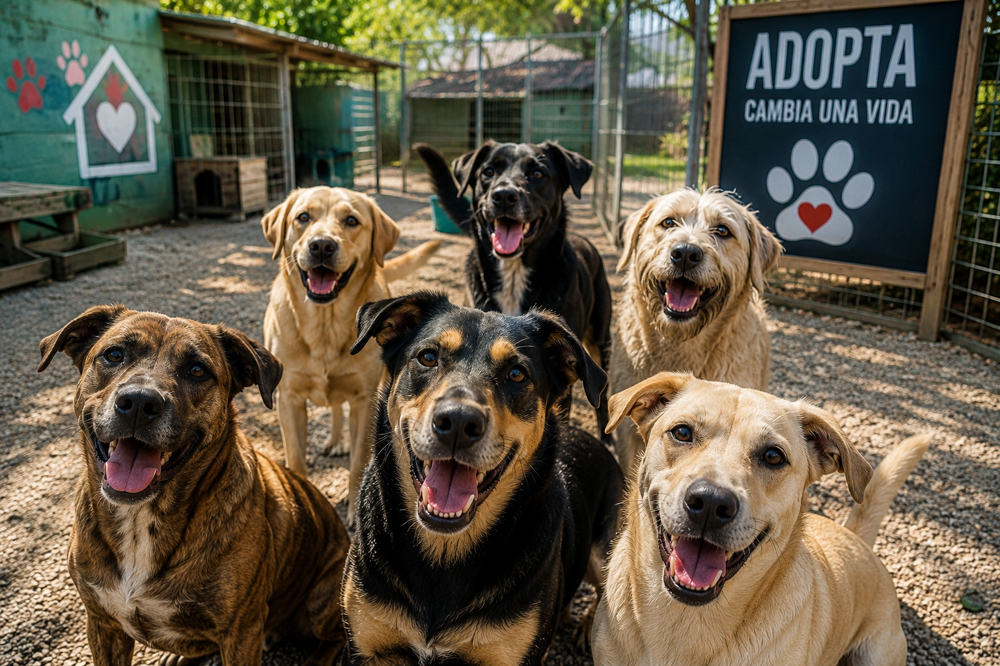

Nuestros Programas
En nuestra ONG trabajamos con diferentes iniciativas para mejorar la vida de los animales y fomentar la adopción responsable.

Programa de Adopción Responsable
Este programa busca encontrar hogares definitivos para perros y gatos rescatados.
¿A quién está dirigido?
A personas y familias que quieran adoptar una mascota y estén dispuestas a brindarle cuidado y amor.
¿Cómo participar?
- Completar el formulario de adopción.
- Entrevista con nuestro equipo.
- Visita al hogar.
- Entrega del animal.
Programa de Tránsito
Ofrecemos hogares temporales para animales rescatados hasta que encuentren una familia definitiva.
¿A quién está dirigido?
A personas que no pueden adoptar permanentemente pero sí ayudar temporalmente.
¿Cómo participar?
- Inscribirse como hogar de tránsito.
- Recibir asesoramiento veterinario.
- Cuidar al animal hasta su adopción.
Programa de Concientización
Realizamos campañas educativas sobre el cuidado animal, la esterilización y la importancia de adoptar.
¿A quién está dirigido?
A toda la comunidad, especialmente escuelas y jóvenes.
¿Cómo participar?
Podés sumarte como voluntario o asistir a nuestras charlas y eventos.
Ser voluntario